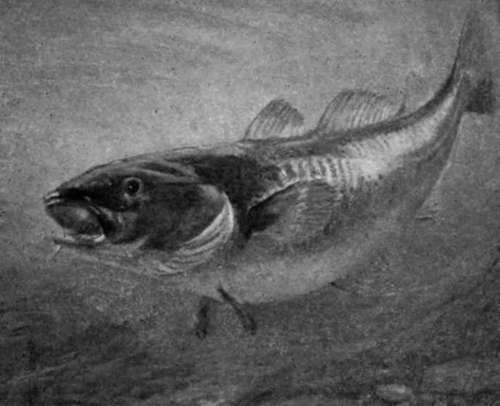

Sea Fishing | by John Bickerdyke
For those who are seeking for knowledge on any of the subjects dealt with will find the results of many years' experience written by men who are in every case adepts at the Sport or Pastime of which they write. It is to point the way to success to those who are ignorant of the sciences they aspire to master, and who have no friend to help or coach them, that these volumes are written.
| Title | Sea Fishing |
| Author | John Bickerdyke |
| Publisher | Longmans, Green, And Co. |
| Year | 1895 |
| Copyright | 1895, Longmans, Green, And Co. |
| Amazon | Sea Fishing |
On Some Rocky Point—a Well-Known Haunt Of Bass (See p. 191).
By John Bickerdyke, Author of 'Antipodean And Foreign Fish' By W. Senior ' Tarpon ' By A. C. Harmsworth ' Whaling' By Sir H. W. Gore-Booth, Bart.
Illustrated By C. Napier Hemy, R. T. Pritchett, W. W. May And Others
Dedication To H.R.H. The Prince Of Wales
 Sea Fishing
Sea Fishing- Having received permission to dedicate these volumes, the Badminton Library of Sports and Pastimes, to His Royal Highness the Prince of Wales, I do so feeling that I am dedicating them to one of the b...
- Preface
- A FEW LINES only are necessary to explain the object with which these volumes are put forth. There is no modern encyclopaedia to which the inexperienced man, who seeks guidance in the practice of the ...
- Chapter I. Introductory. Charts, Tides, Etc
- This book being a contribution to the Badminton Library, it is perhaps hardly needful to explain that it deals mainly with the sportsman's side of sea fishing. People who are only acquainted with the ...
- Introductory. Charts, Tides, Etc. Part 2
- Bass, pollack, coalfish, and, less often, the grey mullet, are fish which, when in the humour, take the fly readily enough ; and by fly I mean just that combination of fur and feather, which is intend...
- Introductory. Charts, Tides, Etc. Part 3
- As the subscription is a nominal sum, the list of members ought to grow apace. I believe at present there are about three hundred, not including those belonging to the branch societies at Scarborough ...
- Introductory. Charts, Tides, Etc. Part 4
- I have on more than one occasion found the study of marks extremely valuable, even when I have been out with men who were professional fishermen, and might be expected to exercise reasonable care in p...
- Introductory. Charts, Tides, Etc. Part 5
- The water in the sea flows for a certain number of hours in one direction; then comes almost to a standstill, and begins to flow for a certain number of hours in the opposite direction. If we are on t...
- Introductory. Charts, Tides, Etc. Part 6
- 1 A nautical mile is about 260 yards longer than a land mile. The knots on the log line are 50 2/3 feet apart. That is to say, there would be 120 of them in a mile of line. Thus, as there are 120 half...
- Introductory. Charts, Tides, Etc. Part 7
- This leads me to a not unimportant portion of my subject, namely, the migration of sea fish. All freshwater anglers know that the larger the river or lake, the more difficult it is to find the fish. I...
- Introductory. Charts, Tides, Etc. Part 8
- At several of the Yorkshire watering-places it is the exception to see any amateur with a hand line ; and, as I stated earlier in the chapter, rods have been used for many years for fishing from rocky...
- Introductory. Charts, Tides, Etc. Part 9
- Improvements in gear introduced by amateurs are even making headway among the professional fishermen, who in some few places are beginning to recognise the advantages of silkworm gut over their hempen...
- Introductory. Charts, Tides, Etc. Part 10
- Never on salmon river or trout stream have I enjoyed more splendid fly fishing than has fallen to my lot from Filey Brigg. Sometimes so eager were the fish, that if one missed the fly another was hook...
- Chapter II. Round The British And Irish Coasts
- There are two classes of sea fishing, the one incidental to a yachting cruise or the annual migration to the sea coast; the other, the more serious undertaking of the keen sportsman who, regardless of...
- Round The British And Irish Coasts. Part 2
- A very high authority has delivered his opinion that the east coasts of Great Britain and Ireland are more highly favoured by fish than the west coasts. But the east coast of Scotland does not offer s...
- Round The British And Irish Coasts. Part 3
- 'Where did you get those bream?' I asked. ' Those what, sir ? ' said the man. ' Bream,' said I. ' Divil a bream,' was the reply ; ' they're carrp.' ' I beg your pardon, they are bream ; the c...
- Round The British And Irish Coasts. Part 4
- There is a good deal of sea fishing done at Carnarvon and Beaumaris, and fair pollack fishing can be had round the headlands near Holyhead. I had a very good account given me of the fishing at the mou...
- Round The British And Irish Coasts. Part 5
- At Falmouth sport is reputed somewhat uncertain, and boat hire does not usually err on the side of moderation. Both here and all along the Cornwall coast, from almost the end of July to the end of Dec...
- Round The British And Irish Coasts. Part 6
- A few miles onward is Dartmouth, a town on the west side of the estuary of the Dart. The extensive harbour is deep and frequently contains large numbers of sea fish, including mackerel. There is fishi...
- Round The British And Irish Coasts. Part 7
- About Portsmouth are traditions of bass, though very few are caught; but to the eastward, where the sewage of this important naval town empties itself into the sea at Langstone Harbour, there are plen...
- Round The British And Irish Coasts. Part 8
- The tide runs very strongly in the Downs, and off Deal the sea takes the form of a huge eddy. The tide flows northward towards Ramsgate, and ebbs southward towards Dover. When running fiercely, it is ...
- Round The British And Irish Coasts. Part 9
- At Cromer there is codling fishing in autumn, and quantities of flat fish are caught in small beam trawls, on stretches of sand known to the fishermen, lying between reefs of rocks. Crab and lobster f...
- Chapter III. Whippings, Servings, Knots, Hooks, And Sundry Wrinkles
- While it is not necessary for a fresh- or saltwater angler to be intimately acquainted with the details of tackle-making, it is certainly most desirable that he should learn how to tie or whip a snood...
- Whippings, Servings, Knots, Hooks, And Sundry Wrinkles. Part 2
- Two kinds of hooks are used in sea fishing : those with eyes and those with flat ends ; the second being most favoured by professional fishermen, probably on account of their cheapness. I much prefer ...
- Whippings, Servings, Knots, Hooks, And Sundry Wrinkles. Part 3
- A necessary knot to be learnt is one suitable for tying two lengths of gut together. A strong trustworthy knot is quickly made by laying the two ends together (a) and tying them in a simple knot, plac...
- Whippings, Servings, Knots, Hooks, And Sundry Wrinkles. Part 4
- RUNNING LINE ATTACHED TO FLY CASTS OR WHIFFING SNOODS BY FIGURE OF EIGHT KNOT. Twisting gut or hemp yarn is a simple matter. The little secret—for there is one—is to take two ends (the other ends b...
- Chapter IV. Baits
- Hooks ; some of the large and high-flavoured members of this family which come from foreign parts are fit for little else. It should be also remembered that sea fish are fond of the beards of oysters....
- Bacon Skin
- This is by no means a bad bait for bass and pollack, either for whiffing or casting, and may be cut out of either a thin-skinned piece of bacon or salt pork. It should be soaked and scraped. No fat sh...
- Crabs
- The ubiquitous green crab when in full marching order—that is to say, with all its armour on—is not much used as a hook bait, but is extremely valuable when pounded up as a ground bait. Crushed and co...
- Earthworms
- Earthworms are not particularly good baits for sea fish, but they should certainly be used when nothing better is obtainable, particularly in brackish water, where eels and flat fish will take them we...
- Eels
- The white belly-skin of a conger is suitable for fish-skin flies and similar whiffing baits. For pollack there are few more killing baits than a small eel about four or five inches in length. It may b...
- Garfish
- The garfish, which, as will be seen by reference to Chapter XI., is known by a large variety of names, is occasionally cut up when nothing better offers. A strip of its skin makes a very fair whiffing...
- Herring
- This is a very valuable bait for most kinds of sea fish, and is often obtainable either from the fishmongers or the fishermen. In America it is pounded up and used as ground bait. It is particularly v...
- Lampreys And Lamperns
- Lampreys are first-rate whiffing baits, equally as good as small eels, and should be used in exactly the same manner. They have much the appearance of eels, but a very curious sucking apparatus takes ...
- Lugworms
- Lugworms, which are sometimes, but rarely, called lobworms, take the highest rank among baits for sea fish. They are dark reddish-brown in colour. Their form may be identified from Mr. Pritchett's car...
- The Mackerel
- The Mackerel, which is more particularly described in a subsequent chapter, is very valuable for purposes of bait, and can be used in a variety of ways. In the first place, a strip of mackerel skin is...
- Mussels
- The welfare of some thousands of people depends on these shell fish. There is no fish in the sea which will not take them, and they are particularly valuable for haddock and cod fishing. There are mus...
- Pilchards
- Pilchards are among the oiliest of fishes, and much valued on that account either as bait or ground bait. So far as Britain is concerned, they are not generally found very far beyond the coasts of Cor...
- Ragworm, Pollack Worm, Or Mudworm
- The drawing of this curious and not too presentable creature will serve to identify a very valuable worm. Its favourite haunts are the odorous banks of mud in estuaries and harbours. In such places ra...
- Ray's Liver
- Ray's Liver is a noted bass bait in certain places : to wit, the mouths of harbours or the adjoining shore, where a good deal of offal from fishing boats, etc, finds its way into the sea. It is extrem...
- The Sand Eel Or Launce
- The Sand Eel Or Launce is not only a valuable bait, but also a very important source of food to most species of sea fish. There are two varieties, the lesser and the greater. It is known by numerous l...
- The Sea Loach, Or Rockling
- The Sea Loach, Or Rockling, is a useful little fish of the cod family, found among the rocks on some parts of our coasts, and is a good whiffing bait for pollack, etc. Shrimps Shrimps are admira...
- The Spotted Gunnel, Or Butterfish
- The Spotted Gunnel, Or Butterfish—a term which is equally applied to the blennies—is a capital whiffing bait for pollack, and can be either simply trailed on the eel tackle (p. 96), or mounted on spin...
- The Octopus, Squid And Cuttle
- The Octopus, Squid And Cuttle have no outer shells, and protect themselves from their enemies by expelling from a little bag an inky fluid which discolours the water and hides them. Most of the head-f...
- The Octopus, Squid And Cuttle. Continued
- Another record of a giant calamary, which appears to be well authenticated, occurs in the ' Annals and Magazine of Natural History,' fourth series, vol. 13. There the Rev. M. Harvey described how thre...
- Whelks
- Whelks are not greatly used as bait by the amateur sea fisher, but are simply invaluable to the long-liner owing to their toughness, a hook baited with a whelk being very seldom robbed. They are taken...
- The Varm
- This is sometimes, and I expect wrongly, called the sea tapeworm. It is a Channel Island bait, and is also used by the fishermen of the Isle of Man. I have not met with it myself, but a friend tells m...
- Artificial Baits
- The principal, I may say only, artificial baits of any use to the sea fisherman are those used for whiffing, spinning, or casting as a fly. Of flies, so called, there is little or nothing to be added ...
- Chapter V. Fly Fishing In The Sea
- Fly fishing in the sea is a lottery. There is more of it than most people suppose, but there is no kind of sea fishing more uncertain. Occasionally, takes are reported which would fill the salmon or s...
- Fly Fishing In The Sea. Part 2
- In 1893 the capture of a cod in Loch Nevis on a fly was reported in the ' Fishing Gazette,' and numerous other instances of sea fish taking salmon or other artificial flies of considerable size have b...
- Fly Fishing In The Sea. Part 3
- Another instance of salmon taking the fly occurs in the Fleet, a piece of water between Dornoch and Goldspie, on the coast of Sutherlandshire. There the fly is worked systematically during the first f...
- Fly Fishing In The Sea. Part 4
- One of the finest takes of sea trout I have ever seen, leaving out of consideration the monster fish which are found in Norway, was caught on the smallest possible blue Doctor at the end of a very fin...
- Fly Fishing In The Sea. Part 5
- There can be no possible mistake about the bass being on the feed ; you can even see them. They have hunted the herring fry to the surface and are attacking them below, while the gulls are worrying th...
- Fly Fishing In The Sea. Part 6
- Beginners have a habit, when a fish is exhausted, of reeling in too much line. If your rod is fifteen feet and you reel up until only ten feet of line remain below the rod point, it is obvious that th...
- Fly Fishing In The Sea. Part 7
- In the Orkneys flies are by no means a modern innovation, the local fishermen finding that these large double-winged flies will kill lythe and saithe when red and white rags fail. A single set of wing...
- Fly Fishing In The Sea. Part 8
- Both for pollack and coalfish the fly should be cast and drawn through the water, and if the fish run over a pound I should certainly not use more than one fly. I hope these remarks will not lead a...
- Chapter VI. From Land And Pier
- Many centuries ago, before even what is occasionally termed the ' dim and misty past,' some such scene as this took place : A barbaric personage, carelessly wrapped in bear or deer skin, might have be...
- From Land And Pier. Part 2
- While for boat work the sea angler requires a rod rather short than long, for fishing from rocks and the shore the rod should err on the side of length. Even when fishing from a pier it is well to hav...
- From Land And Pier. Part 3
- If the reel is entirely of wood it should be taken to pieces, and either carefully painted inside with two coats of enamel paint or smothered with vaseline. Otherwise the salt water, which drips into ...
- From Land And Pier. Part 4
- In the chapter on Fishing from Small Boats I have very carefully described the best forms of lead, and the position in which the swivels should be placed. The various kinds of bait which may be used h...
- From Land And Pier. Part 5
- It is a very free-running reel, mind ; and, on being started with a jerk, soon revolves infinitely faster than is required by the line which is leaving it. In anglers' language, it will 'overrun ' unl...
- From Land And Pier. Part 6
- There are three typical positions on a rocky coast. The angler may find himself standing on a precipitous rock with deep water just under his feet, and is, as regards the fish, much in the same positi...
- Float
- If the water is deep, it may be asked how float tackle can be used? By a clever little contrivance, known as the Slider float, which is explained on p. 253, almost any depth, within reason, can be fis...
- Float. Part 2
- Imagine a man walking through a forest and suddenly coming upon a mutton chop daintily arranged on a silver plate ! I don't believe he would eat it. He would think it was poisoned, or something or oth...
- Float. Part 3
- In the Solent and other places thousands of smelts are caught by means of small meshed nets extended on an iron hoop and let down into the water by means of a stout pole. Shoals of these fish can usua...
- Float. Part 4
- If only one line is used the fisherman will, of course, hold it in his hand, and immediately he feels a bite haul it in. If he has two lines, it is a common practice to fasten the end of one to a supp...
- Float. Part 5
- But it is not everybody who cares to stand on a lonely seashore, with ghostly looking waves hurrying up out of the darkness and breaking at one's feet. At Lowestoft there was a lighthouse with a red l...
- Float. Part 6
- Where there is a considerable rise of tide, a very long line is of course required ; in fact, this tackle is not suitable for places where the tide rises over several hundred yards of shore. If the bu...
- Chapter VII. Sea Fishing From Small Boats
- In the pages of ' Punch ' the inimitable John Leech once drew a happy sketch of a very unhappy cockney sportsman— middle-aged and corpulent, sitting in a very small boat in company with a stout man in...
- Sea Fishing From Small Boats. Part 2
- Boatmen's charges is a subject on which there is not a great deal to be said. At short-season watering-places, where the men have to make their harvest in a few weeks, a habit has arisen of charging w...
- Sea Fishing From Small Boats. Part 3
- When I first wrote my little treatise,' Angling in Salt Water,' I did not think sea anglers would ever venture to use 2-lb. leads when fishing with a rod, nor until recently have I done. When fishi...
- Sea Fishing From Small Boats. Part 4
- When I first began writing about sea fishing I always recommended a Nottingham reel, and lived in hopes that some day or other a special reel for saltwater angling made on that system would soon be br...
- Sea Fishing From Small Boats. Part 5
- The reel should be well but not over filled, and should hold not fewer than seventy-five fathoms, or, in landsmen's language, one hundred and fifty yards. Under special circumstances even more line th...
- Sea Fishing From Small Boats. Part 6
- A simple and excellent weight can be made out of a piece of composition gas piping. The requisite length is cut off and filled with melted lead, a piece of brass wire as shown in the illustration bein...
- Sea Fishing From Small Boats. Part 7
- If there is any chance of fish over two pounds, the landing net or gaff is almost a necessary item of tackle. Not only do fish often kick off when being lifted on a hook through the air, but if at all...
- Sea Fishing From Small Boats. Part 8
- Except where the tidal current is very strong, the ground-bait net which I have described on page 133 should be used. If there is no current at all, it is a capital plan to throw in fragments of cr...
- Sea Fishing From Small Boats. Part 9
- One great advantage of the float is that by simply letting off line from the reel one can fish at various distances from the boat, and cover much more water than with the hand lines which I have descr...
- Sea Fishing From Small Boats. Part 10
- Of leads there are many patterns, but the best of them are those the centre of gravity of which is below the level of the line. The old system was to have the trace running through the centre of the l...
- Sea Fishing From Small Boats. Part 11
- 1 A trace thus constructed is unsuitable for casting out. For that purpose the lead must be at the most four feet from the bait. —J. B. Mackerel Hooks. With pollack, on the other hand, very ...
- Sea Fishing From Small Boats. Part 12
- With regard to hand lines, the most ancient form, and that still most commonly used, consists of a lead and a spreader, from the two ends of which dangle snoodings with hooks. There are several variet...
- Chapter VIII. Sea Fishing From Yachts And Large Fishing Boats
- Yachts and other vessels are often so situated that a good deal of the more delicate kinds of sea fishing may be enjoyed from their white decks. For instance, when they are moored in a Scotch sea loch...
- Sea Fishing From Yachts And Large Fishing Boats. Part 2
- Suppose, now, we are fishing a very deep place where such heavy leads are required that a hand line must be brought into requisition ; the exact form of tackle to be used should depend on the variety ...
- Sea Fishing From Yachts And Large Fishing Boats. Part 3
- There are several forms of railing or whiffing tackles used on various parts of the coast. They vary mainly in the shape of the lead, and the chopstick used in connection with it. The most important p...
- Sea Fishing From Yachts And Large Fishing Boats. Part 4
- On p. 261 I have given an engraving of two hooks, one for use in places where the mackerel are small, the other for large mackerel. On the question of baits I must refer the reader to page 107, and me...
- Sea Fishing From Yachts And Large Fishing Boats. Part 5
- There are three kinds of long lines. The drift-trot is laid along the bottom, and is weighted at one end. It is only of advantage where the tide runs strongly. Another is also laid on the bottom, but ...
- Sea Fishing From Yachts And Large Fishing Boats. Part 6
- Trots or long lines should be coiled in a shallow basket, on the edge of which the hooks can be caught. The main length of line should always be tanned, and should be strong enough to moor a small boa...
- Sea Fishing From Yachts And Large Fishing Boats. Part 7
- Are the fisheries deteriorating or not ? The only practicable way to test the question is to compare the season's catches at the present day made by one or some other given number of boats, with the c...
- Sea Fishing From Yachts And Large Fishing Boats. Part 8
- The largest number of small flat fish is probably caught in the very small meshed shrimp trawls which are worked in most of our larger estuaries. A report was made on this subject some time ago by the...
- Sea Fishing From Yachts And Large Fishing Boats. Part 9
- A clever apparatus, and one much more suitable for yacht-owners, is that known as the otter trawl, which, as will be seen from the illustration, has no beam. The mouth of the trawl in this case is kep...
- Sea Fishing From Yachts And Large Fishing Boats. Part 10
- The otter trawl is best let down over the stern of the yacht, which should be sailed in about the same direction as the tide. The sides of the bridle should be paid out over each quarter, and the otte...
- Sea Fishing From Yachts And Large Fishing Boats. Part 11
- The pilchards, etc. are removed by using what is called a tuck seine inside the larger net. This net is ten fathoms deep, and as its ends are brought together the lower portions are raised under the f...
- Chapter IX. The Ocean Fishing Rod
- A good ship is steadily ploughing her way through that maritime oven known as the Red Sea. Under the shade of the awning passengers in varying degrees of exhaustion are lying in deck chairs. There is ...
- The Ocean Fishing Rod. Part 2
- Captain Howell always uses two hanks of stout log line, at the end of which there is a swivel; through this he reeves a galvanised wire trace about two fathoms long. The hook is double (made according...
- The Ocean Fishing Rod. Part 3
- Many ocean fishers favour some such ' fly ' as that described by Captain Howell, the size being chosen according to the weather and fish. Another excellent bait is a strip of parchment six or seven in...
- The Ocean Fishing Rod. Part 4
- Not the least charming feature of this ocean fishing is that the quarry are more or less edible. Dolphins are considered quite a luxury in the Mediterranean, fetch a high price at Gibraltar, and their...
- The Bonito (Thynnus Pelamys)
- The Bonito (Thynnus Pelamys) sometimes visits the British coasts, and has been taken in the Firth of Forth. Couch mentions one which was brought into Whitehaven in Cumberland, and a small specimen 20 ...
- The Flying Fish (Exocoetus Volitans)
- The Flying Fish (Exocoetus Volitans), the favourite food of the great ocean mackerels, is sometimes caught on a hook. In the ' Zoologist' a Mr. Smith described how, during a voyage from Peru to Callao...
- Chapter X. Low Water Shell Fish And Conger Hunting, Prawning, And Shrimping
- We may leave for a while fish possessing backbones, ribs, and other parts of great delight to osteologists, and turn our attention to those strange creatures which carry their skeletons on their back,...
- The Cocoanut Crab
- The Cocoanut Crab, having no rocks to lie under, makes a burrow for himself like a rabbit among the roots of huge tropical trees. He tears off the husk from the eyed end of the nut, and then hammers w...
- The Quaint Little Hermit Crab
- The Quaint Little Hermit Crab, common enough in English waters, is certainly one of the most singular members of the family. Something has already been said about him in the Bait chapter. Nature havin...
- Crawfish
- Crawfish figure in the period called classical. Pliny, who it must be feared was a teller of fish stories, speaks of one four cubits long. The ancient Romans used to eat them in company with asparagus...
- Crawfish. Part 2
- Great care must be taken to secure lobsters as they are drawn out of their holes, for they are most powerful swimmers, one flap of their tail sending them many yards backwards shooting through the wat...
- Crawfish. Part 3
- A deadly way of catching prawns is to lower a number of hoop nets exactly the same as for lobsters (p. 343), but smaller, to the bottom of pools and leave them there for a while. The net, which may me...
- Chapter XI. Surface Feeding Sea Fish
- We have now fished many waters in many ways ; journeyed round the coasts of Great Britain—fly fishing here, pater-nostering there, casting out our spinning or other tackle from land or pierhead ; now ...
- The Bass, The Labrax Of Aristotle, And Lupus Of Pliny
- This most admirable fish is nothing more nor less than a large marine perch which, when it enters estuaries for spawning purposes at the end of summer, sometimes proceeds up rivers into fresh water. I...
- The Bass, The Labrax Of Aristotle, And Lupus Of Pliny. Continued
- But to return to the bait question. Among the shoals which are feeding in some tidal race during the best of the flood tide, the bait should certainly be somewhat similar to the fry on which they are ...
- The Grey Mullet
- The Grey Mullet, like the bass, has a prickly dorsal fin. It is very easily distinguished from its more voracious companion by the fact that this fin contains only four very evident spines, while that...
- The Grey Mullet. Part 2
- Angling for these shy fish is like an incurable disease—there are many prescriptions for it. Some of these, I fear, do not stand the test of time and are merely based on chance successes, depending mo...
- The Grey Mullet. Part 3
- One opinion I will venture ; that now j. a. c. k. has let out the secret of his success (by the way, he catches bass as well as mullet in this manner), a troop of sea fishers will forthwith journey to...
- The Pollack
- The Pollack, of all the members of the Gadidce or Cod family, is, from a sportsman's point of view, by far the most important. When first caught it is a very beautiful fish ; its back of dark green br...
- The Coalfish
- The Coalfish, a fine sporting fish, is remarkable for the extraordinary number of aliases under which he passes. Ichthyologists have given him various Latin names, but these fade into insignificance b...
- Salmon And Sea Trout
- Salmon And Sea Trout are such undoubted sea fishes, coming into fresh water for breeding purposes, and possibly—in the case of salmon in very large rivers early in the year—for protection from seals, ...
- Mackerel
- The mere name recalls pleasant visions of rippling waters flecked with white, of sunny skies, and the healthy, salt, sea breeze whistling through the rigging; of a pile of little silver billets, two o...
- Mackerel. Continued
- There are four methods of mackerel fishing. The largest catches are usually made by means of drift nets which are simply walls of netting, buoyed on one side, that drift with the tide during the night...
- The Garfish
- The Garfish, often found swimming with the mackerel shoals, is one of the most curious fish of the sea. It is long, eel-shaped, with a beak almost like a snipe ; the lower jaw, if jaw it can be called...
- The Skipper, Or Saury
- The Skipper, Or Saury, closely resembles the garfish. It is also known as saury-pike, skip-jack, halion, and skopster. The Scotch call it the Egyptian herring, gosnick, and gowdnock. It rarely or neve...
- The Herring
- The Herring is a remarkable fish. I have often wondered why no one has written a book on him, for there is much more material for such a work than there is for a dissertation on any other of our food ...
- The Smelt
- The Smelt is a name given to three different fish. In the first place, the term is used locally instead of smolt—the young salmon, with which we now have nothing to do. There is also the atherine, or ...
- The True Smelt
- The True Smelt is scarce on our southern shores, but very numerous from the mouth of the Thames northward. Many ancient and important smelt fisheries existed on that part of the coast. In the estuarie...
- The Atherine
- The Atherine, unlike the true smelt, is scarce on the East coast and abundant on our southern shores. It has a little family all to itself, named by Dr. Gunther Atherinidae. It is a widely distributed...
- Chapter XII. Flat Sided And Flat Backed Fishes
- Certain of the flat fish take a high place among the freaks which Nature loves to produce. Regard a fishmonger's slab and note the expression on the face of sole, dab, or flounder— the kind of paralyt...
- The Turbot (Rhombus Maximus)
- The Turbot (Rhombus Maximus) spends several more weeks of its childhood on edge than do the other flat fish. It is found all round our coasts, being particularly plentiful in the German Ocean, but lar...
- Of The Sole (Solea Vulgaris)
- Of The Sole (Solea Vulgaris) I am inclined to say little. In the first place, it bids fair to become extinct ; and, on account of its scarcity and night-feeding habits, is not often caught by the angl...
- Plaice (Pleuronectes Platessa)
- Plaice (Pleuronectes Platessa) may always be identified by their red spots. They are fairly plentiful all round our coasts, and in places afford really good sport to the sea angler. Like most other fl...
- The Sand Dab (Pleuronectes Limanda)
- The Sand Dab (Pleuronectes Limanda) is likely to be caught wherever there is a sandy shore. Should the run of fish be small the hook may be a size less than that illustrated. As a rule these fish are ...
- Flounders
- Flounders are termed Pleuronectes flesus by naturalists, and flounders, flecks, butts, black backs, and lanterns by common persons. In Norway I noted that the term flyndre was applied to several varie...
- The Common Skate
- The Common Skate—the Raia batis of naturalists, blue skate of Scotland, and grey skate of England—is common round the coasts of Great Britain and Ireland. It grows to an enormous size. There is one in...
- The Rays
- The Rays are much like the skates, but are shorter or blunter in the snout, and, in addition to certain dangerous thorn-like teeth or claws which project from the tail, have similar weapons of defence...
- Chapter XIII. Cod, Haddocks, Whiting, Bream, Conger, Sharks, Etc
- Any formal introduction of the reader to the Cod family is surely needless, for they are old acquaintances. Round the British Isles and in all northern seas these valuable food fish abound where the d...
- Cod, Haddocks, Whiting, Bream, Conger, Sharks, Etc. Continued
- Professar Sars, of Norway, who has made a special study of these fish, found that the eggs floated unless the specific gravity of the sea was lessened by river water flowing into it, which would cause...
- The Whiting
- Important members of the Gadidm or Cod family are the pollack and the coalfish, but these I have dealt with in a previous chapter. Of a kin, and next in importance, at any rate to the sportsman, is th...
- The Pout (Gadus Luscus)
- The Pout (Gadus Luscus) is less silvery than the whiting, and has not its elegance of form, being decidedly pot-bellied. If a vessel has foundered anywhere, and its ribs are still sticking up out of t...
- The Haddock (Gadus Atglefinus)
- The Haddock (Gadus Atglefinus) is a fish which has given me many a day's enjoyable sport. It is so well known that description hardly seems necessary, though let it be mentioned that fresh out of the ...
- Hake (Merluccius Vulgaris) And Ling (Molva Vulgaris)
- Hake (Merluccius Vulgaris) And Ling (Molva Vulgaris) are two fish which are frequently confounded by amateur sea fishermen. Both of them, but more particularly the ling, incline to the appearance of b...
- Ting
- Ting are often caught by cod fishers, and they particularly favour those rocky localities in which one would expect to find large conger. Speaking generally, it may be said that they may be caught on ...
- The Power Or Poor Cod And The Torsk
- The Power Or Poor Cod And The Torsk are the only two other members of the Cod family which need be mentioned in a work of this kind. Torsk, by the way, is a name which in Norway is applied to several ...
- Conger (Conger Vulgaris)
- Conger (Conger Vulgaris), for we may now leave the great Gadidce family, were insensibly led up to by the consideration of ling. From time immemorial congers have been both the delight and despair of ...
- Conger (Conger Vulgaris). Part 2
- There are few baits which conger will not take. Among the best are fresh squid ; cuttle treated like a beefsteak—that is, well beaten to make it tender ; a piece of mackerel, pilchard, herring, or spr...
- Conger (Conger Vulgaris). Part 3
- Obviously, if fishing over rocks, great care should be taken not to let the conger get into any nook or cranny, or on the bottom. Once there, it will be very difficult to dislodge him. The only way of...
- Dogfish
- Dogfish swarm all round our coasts, and their big cousins the sharks, of various species, are less uncommon than is generally supposed. Many a saltwater angler has had his gear carried away by Blue Sh...
- Sharks
- Sharks are as tenacious of life as cats. Couch tells a delicious story of one which, being returned to the sea after its liver had been cut out, chased a mackerel. This story has been repeated in popu...
- The Thrasher (Alopias Vulpes)
- The Thrasher (Alopias Vulpes), also called slasher, sea-fox, fox-shark, and sea-ape, is a shark caught now and again on the Cornish and other parts of our coasts. Its peculiarity is an enormous tail-f...
- The Basking Shark (Selache Maxima)
- The Basking Shark (Selache Maxima) is of far greater importance commercially than any of the species already mentioned, but from the angler's standpoint it is a useless creature. It affords sport neve...
- Surgeon General Paske
- Surgeon General Paske, in an interesting book relating to sea fish, called 'The Sea and the Rod,' written by himself and Mr. F. G. Aflalo, describes how he once succeeded in catching one of these pilo...
- The Common Dogfish
- The Common Dogfish can hardly be distinguished from the ' Sweet William' previously mentioned, except by his defensive and offensive spines. He has several local names, such as bone-dog, sea-dog, and ...
- The Rough Hound
- The Rough Hound is most common off the Hebrides, Devon, Cornwall, and Ireland. It is variously named row-hound, small or lesser spotted dogfish, curfish, kennett, daggar, huss, hund-fish, land-dog, su...
- Bream
- Bream, though not particularly estimable on the table, rank rather highly among the sportsman's sea fish, being plentiful, biting freely and fighting gamely. They have, however, the disadvantage that ...
- The Black Bream
- The Black Bream, sometimes called old wife and baker (Cantharus lineatus), are caught during July and August in shallow waters, but on the approach of autumn retire to the deeps. They are often taken ...
- Gurnards Or Gurnets
- Gurnards Or Gurnets, as they are variously called, have perhaps the most remarkable appearance of any of our marine food fishes. Their characteristics are a square, massive, bony head, with a body rap...
- Grey Gurnard, Or Hard Heads (Trigla Gurnardus)
- Grey Gurnard, Or Hard Heads (Trigla Gurnardus), are very common fish on some parts of the coast in certain seasons. In Scotland they are often called gowdies, girnats, and crooners, and the Irish name...
- The Wrasses
- The Wrasses are among the most beautiful and at the same time most worthless fish found in the sea. No pen can properly describe the beauty of some of these fish when they are first brought out of the...
- The Dory Or John Dory
- The Dory Or John Dory, which is one of the quaintest-looking fish that swim, is not, so far as I know, commonly taken by anglers. Naturalists call it Zeus faber. ' Dory,' no doubt, is derived from the...
- The Angler Or Monkfish
- A book on sea fishing hardly seems complete without some mention of the remarkably ugly, voracious and nasty-looking creature termed by ichthyologists Lophius piscatorius, which consists mainly of an ...
- The Little Weever, Or Sting Fish (Trachinus Vipera)
- The Little Weever, Or Sting Fish (Trachinus Vipera), is more common than the greater weever. They are not to be confounded with the father lasher or Greenland bull-head (Cottus scorpius), which is als...
- Chapter XIV. The Sea Fisher In Foreign Parts. By William Senior ('Red Spinner')
- So very wide a subject as this can only be treated generally. Data are scarce and casual. The traveller to foreign parts, however, may be recommended, in making preparations for possible opportunities...
- The Sea Fisher In Foreign Parts. By William Senior ('Red Spinner'). Continued
- The mullet caught in this way are sometimes as much as five pounds in weight, and the method is practically one of tight-line fishing on a sloping beach. Should the mullet take the fancy of going stra...
- The Native Moors
- The Native Moors, whose characteristics are so pleasantly sketched by ' Sarcelle' in his descriptions of sport with fishes and birds, were keen fishermen with the rod. Invoking Allah for prosperity, t...
- The Azlimzah
- The Azlimzah is another of the great ocean fish taken in these parts, and it advances towards the shore in battalions during July and August. There is always some drawback, however, and the sport is o...
- The Aourah
- The Aourah comes into the water in shoals at the same time. These are beautiful fish, with gold and silvery hues, and blue grey markings on the side. They will follow the boat close to the rudder, and...
- The Bonito
- The Bonito is ready-found game on all the Atlantic stations, and at St. Helena the officers obtain good baskets by using bamboo rods about fourteen feet long, Nottingham winches, and about one hundred...
- The Antipodes
- The Antipodes provide much amusement for the sea-angling colonists, and, save in New Zealand, Tasmania, and, to a limited degree, Victoria, it is to the salt rather than to the fresh water that they m...
- The Schnapper
- The Schnapper is, like nearly all the fishes of these waters, beautifully tinted, and the prevailing colour is rose pink, speckled with turquoise blue. It is a thick, broad-sided fellow, as if origina...
- The Jew Fish
- The Jew Fish, common in all the colonies, is the Sciœna atitarctica of Castelnau, and is allied to the maigre of the Mediterranean. The fish is better for appearance and sport than for edible qualitie...
- The Maoris
- The Maoris themselves are keen and clever fishermen, and have from time immemorial used the rude hooks of charred wood or bone found amongst all eastern peoples. When the use of metal became known, an...
- The South Sea Islanders
- The South Sea Islanders, like the Maoris, are skilful and most persevering fishermen, and adopt a variety of methods to add to their simple diet the fish which cruise around the reefs and rocks. Some ...
- The Polynesians
- The Polynesians have an ingenious form of sport something in the nature of a battue. A number of rafts are joined together to form a water compound on some shallow beach frequented by fish. A couple o...
- Chapter XV. Tarpon Fishing In The Gulf Of Mexico
- Take a reasonably large map of the United States, cast your eye down to the south-west of Florida, and you will be looking at the coast outline of one of the best of sporting countries. If you are an ...
- Tarpon Fishing In The Gulf Of Mexico. Part 2
- He has kindly furnished me with some notes of his experiences during his visit in 1894. He says, after remarking that few tarpon fishers agree as to the details of the sport, and that every man has hi...
- Tarpon Fishing In The Gulf Of Mexico. Part 3
- ' When you buy tarpon tackle, young man,' remarked an old Southern gentleman to me, ' you have got to remember that you may expect to hook something like a thirty-knot torpedo boat'. Personally I d...
- Tarpon Fishing In The Gulf Of Mexico. Part 4
- Our company was rough and much of the type so well described by Bret Harte and other Western authors. Still, our host did his best to make us comfortable, and his little daughter, a dainty specimen of...
- Tarpon Fishing In The Gulf Of Mexico. Part 5
- Every kind of fishing has its drawbacks, and tarpon is not without them. What wind and trees are to the fly fisherman, catfish, sharks, seaweed, and the tide are to the tarpon fisher. At Marco there a...
- Tarpon Fishing In The Gulf Of Mexico. Part 6
- 'I am afraid it is a shark, sir,' remarked my guide. There are many people who think that shark fishing is done over the side of a ship with a huge piece of pork attached to a hook about twenty tim...
- Tarpon Fishing In The Gulf Of Mexico. Part 7
- Several hours of angling in the blaze of the Florida sun are sufficient for most of us, and I felt weary and dispirited. There were several young tarpon about; we had seen them. I resolved on a final ...
- Brief Summary Of Information For Intending Tarpon Fishers
- Where To Go Book to Punta Gorda, in Florida, viâ New York and Jacksonville. From Punta Gorda access to Fort Myers, Punta Rassa, Naples, St. James City, or Marco is easy. Fort Myers is the most popu...
- Things Which Might Be Useful For A General Sporting Tour In Southern Florida
- Nearly all the items in the following list are, in my opinion, absolutely essential if proceeding to the wild parts of the country. The most frequented parts of Florida are as civilised as any other f...
- Other Fish In Florida
- There is, of course, any amount of other fishing in Florida, though it is naturally not thought much of by tarpon anglers. The ' lady' or ' bone' fish is a game specimen, but, not being an ichthyologi...
- Chapter XVI. Whaling. Greenland Whale. Balaena Mysticetus
- 'A fa—a—a—all !1 A fa—a—a—all !' No man with the true British instinct of sport running in his veins will ever forget the first time he heard this old whaling cry ; indeed, for anyone to thoroughly re...
- Whaling. Greenland Whale. Balaena Mysticetus. Part 2
- Her death is sometimes preceded by a violent struggle, in which she lashes the water into foam with her head, flukes, and tail. The foregores are detached, and the lines coiled back into the boats. Th...
- Whaling. Greenland Whale. Balaena Mysticetus. Part 3
- Each ship usually carries from seven to eight whaleboats, from 26 to 30 feet long, about 5 ft. 9 in. beam over all, and depth amidships from 28 to 30 inches. These boats have very little keel, and cur...
- Whaling. Greenland Whale. Balaena Mysticetus. Part 4
- Having set aside the five or six fathoms of stray line, and been very careful to take all turns out of the lines, you begin to coil from right to left (when facing the box), or in other words with the...
- The Bottlenose (Hyperoodon Rostratus)
- The name Bottlenose given to these whales is derived from the peculiar shape of their head and mouth, which is extremely like that of a huge bird. They generally go either singly, in pairs, or in bunc...
- American Whalers
- For Arctic fishing Americans generally employ strongly protected steamers, much like the Scotch whaling vessels ; but a good deal of ocean fishing is done by boats from the shore and ships of all desc...
- The Sperm Whale
- The Sperm Whale is an extremely awkward fish to approach, for at times she uses her mouth (the lower jaw of which is armed with a formidable row of teeth), flukes and tail with terrible effect. There ...
- The Right Whale
- The Right Whale is provided with powerful flukes, from twelve to fifteen and sometimes twenty feet in length, and five to six feet deep, and the fish occasionally uses them with disastrous effect on h...
- Harpoon Guns
- The American fishermen do not look on harpoon guns with much favour, and the writer, from his own observations, is very greatly inclined to agree with them. The harpoon at times flies very true, but, ...
- Whale Fisheries Of Finmarken, Norway
- The whales on these stations are too strong and rapid in their movements to be successfully captured in the ordinary way, and not much appears to have been done with them until Captain Svend Foyn, of ...